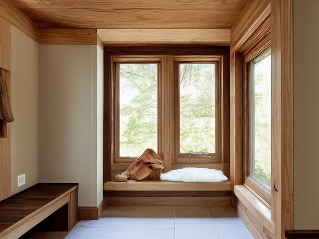

Mudroom micro zone
The Bench and Transition Surface
Somewhere to sit while you deal with your footwear, and a brief stop for things genuinely on their way out of the house.
One session: 15-30 min. short, but most of it spent walking other people's things back to their rooms

What done looks like
A bare seat wide enough for two people to lace boots at once, no more than three objects on the surface, and one labelled basket at the end holding only what is leaving tomorrow.
Check these before you start
- Fall, cut, or crushA heavy hinged bench lid dropping on small fingers, and anything stored on a shelf directly above where a head bends to tie a lace.
- FallA bench seat covered in bags forces people to pull boots off standing on one leg on a wet floor.
What to have on hand before you start
These are types of thing, not brands. If you already own something that does the job, that is the right one to use. Each says which pass needs it and what to watch out for.
- Color-coded microfiber cloth set ×12
Wipe, dust, and dry surfaces, in the Shine pass.
Wash by use color; avoid fabric softener. - Neutral pH multi-surface cleaner
Routine cleaning of sealed surfaces, in the Shine and Sustain passes.
Verify surface compatibility; lock around children and pets. - Compact vacuum with attachments
Remove dust, crumbs, and debris, in the Shine pass.
Use appropriate attachment. - Keep, Relocate, Donate, Recycle, Trash container set ×5
Support rapid item routing during Sort, in the Sort pass.
Do not block exits. - Portable cleaning caddy
Transport and contain cleaning inputs, in the Straighten, Shine and Sustain passes.
Secure chemicals from children and pets. - Portable label maker
Create durable standardized labels, in the Standardize and Sustain passes.
Follow surface and adhesive guidance. - Removable write-on labels
Create temporary or adjustable visual controls, in the Standardize pass.
Test on delicate finishes.
Only if your bench has one: 8 more
Not every bench needs these. Each one is here because some do, and the reason is next to it.
- Adjustable Wall Track System
Secure long tools and sports equipment, in the Straighten, Standardize and Sustain passes.
Do not overload; anchor wall-mounted or tall systems where required. - Bike Wall Rack
Secure bicycles off the floor, in the Straighten, Standardize and Sustain passes.
Do not overload; anchor wall-mounted or tall systems where required. - Boot Tray
Contain water, mud, and outdoor footwear, in the Straighten, Standardize and Sustain passes.
Do not overload; anchor wall-mounted or tall systems where required. - Sports Ball Bin
Contain loose balls and gear, in the Straighten, Standardize and Sustain passes.
Do not overload; anchor wall-mounted or tall systems where required. - Umbrella Stand
Contain umbrellas vertically and allow drying, in the Straighten, Standardize and Sustain passes.
Do not overload; anchor wall-mounted or tall systems where required. - Wall Hook Rail
Create labeled hanging homes, in the Straighten, Standardize and Sustain passes.
Do not overload; anchor wall-mounted or tall systems where required. - Broom and Tool Wall Clips
Secure cleaning tools vertically, in the Straighten, Standardize and Sustain passes.
Do not overload; anchor wall-mounted or tall systems where required. - Shoe Rack
Contain active footwear and preserve floor paths, in the Straighten, Standardize and Sustain passes.
Do not overload; anchor wall-mounted or tall systems where required.
The six passes, in order
Work them in this order. Sorting after you have arranged things means arranging things you were about to remove.
Sort
Decide what stays. Everything else leaves the zone now.
Clear the bench down to bare wood in one go. Most of what is on it belongs in another room, so carry those things there now rather than sliding them to the far end, where they will sit for another month.
Straighten
Give what stays a home, placed where the hand actually reaches.
Protect the seat itself as empty space and give the strays one outbound basket: the library books, the parcel to return, the form waiting for a signature. Nothing that lives in this house permanently gets to sit on this bench.
Shine
Clean it, and use the cleaning to inspect what you cannot see when it is full.
Wipe the seat and the front edge where boot heels scuff it, then pull the bench away from the wall and sweep out the drift of grit, receipts and single socks underneath.
Surface by surface, all 5 of them, with what to use on each.
Safety
Make the zone safe for everybody who uses it, including the shortest person.
Nothing heavy stores on a shelf above the seat, because a bike helmet or a paint tin landing on someone bent over a bootlace is exactly how that shelf fails. Keep the seat clear enough to actually sit on, because balancing on one leg to pull off a wet boot is how people go down.
Standardize
Write down the best way you know today, so it survives you forgetting.
Three objects maximum on the surface, and the outbound basket empties on the next trip out of the door. Photograph the cleared bench and tape the picture inside the nearest cupboard door as the reference.
Sustain
Attach the reset to something that already happens, so it keeps itself.
When you sit down to change your shoes, take one thing off the bench into the house with you as you stand up.
The lid you never lift
If your bench has a hinged storage seat, this is the decision you have been dodging: the box under the lid is full and you cannot say what is in it. Storage under a seat you sit on ten times a day is storage you will never open, because opening it means clearing the seat first. Live with it for a week and count honestly how many times you lift that lid. Fewer than three and the answer is settled. Empty it completely and refill it only with things used while sitting, spare laces, a shoe horn, a rag for wiping soles. Everything else moves somewhere you can reach without asking a person to stand up. If it is still empty in a month, leave it empty.
Cleaning it properly, surface by surface
Work down, not across. Whatever comes off a high surface lands on the one below it, so cleaning the floor first means cleaning it twice.
Carry these in with you. Neutral pH multi-surface cleaner; Color-coded microfiber cloth set; Compact vacuum with attachments; Floor-material-compatible cleaner; Portable cleaning caddy.
- The seat top and any cushion
Clear the surface to bare seat. Wipe a hard wooden or laminate top with a cloth damp with neutral pH multi-surface cleaner, following the grain. If the seat has a cushion or pad, vacuum it with the upholstery tool and lift out any crumbs caught in the piping before it goes back. - The front edge and apron
Go along the front edge and the apron below the seat with the damp cloth, where boot heels and shin kicks leave scuffs and a dark rub line. Let the cleaner sit a moment on a stubborn heel mark, then wipe it off rather than scrubbing raw. - Inside the bench box or lower cubbies
If the bench opens or has cubbies, empty it, vacuum the base and corners where sand settles, then wipe it out and let it air with the lid up until it is bone dry before anything returns. - The outgoing basket at the end
Lift the leaving-tomorrow basket off, tip its crumbs and grit into the bin, and wipe the inside and the rim with the damp cloth. Set it back empty of anything that is not genuinely going out. - The floor under and behind the bench
Pull the bench away from the wall and vacuum the drift of grit, receipts and lone socks that gathers underneath, then wipe or mop the sealed floor there with the floor-material-compatible cleaner. Slide the bench back to its marked spot only once the floor is dry.
Inspect as you clean. Cleaning is the only time you see the zone empty, so use it.
- When you lift a hinged lid, flag a hinge that is loose or a lid-stay that no longer holds, since that is the finger-catcher waiting to happen.
- Rock the bench as you pull it out and flag a leg joint that gives or a seat that flexes under a press of your hand.
- Look at the shelf brackets above the seat and flag any that are pulling from the wall or sitting proud of their fixings.
- Note a damp patch or a musty smell inside a closed bench box, which points to wet gear being shut in and wants flagging.
The standard that keeps it fixed
The seat is always clear, and the surface never carries more than three things.
Reset trigger. When you sit down to change your shoes.
The rest of the mudroom, in working order
Each of these is one session on its own. Finish this zone before you open the next.
- The Family Hook Zone
- The Bench and Transition Surface, you are here
- The Shoe and Boot Storage
- The Pet Station
- The Seasonal Outdoor Gear
- The Cleaning and Utility Zone
The Mudroom in full, with what each of the 6 zones is for
Related reading
- What is 6S?
- This zone's safety pass, in full
- Is one spot in this zone always the one you skip?
- Why this zone gets messy again
- Decluttering vs. organizing
- Before you buy storage for this zone
- Still does not fit, even after the honest count?
- Does something in this zone actually get used somewhere else?
- Stuck on one item in this zone?
- Written the standard, but nobody else follows it?
- Does everyone in the house agree what "done" looks like here?
- Does more than one person use this zone?
- Found a duplicate of something in this zone?
- Why the standard above names one home per category
- Is the everyday item in this zone actually the easy one to reach?
- Not sure whether to keep something in this zone?
- Does this zone keep running out of something?
- Started this zone and stalled partway through?
- Have you stopped noticing the clutter in this zone?
When you want it off the screen
Carry The Bench and Transition Surface into the room
The method above is complete and free. The Whole House Print Pack puts The Bench and Transition Surface and the other 113 micro zones on 684 printable cards, so the steps you just read are not stuck behind a phone screen while your hands are full.
The Print Pack, 19 dollarsJust this zone, 4 dollarsOr draw a card free
The Bench and Transition Surface on its own is 4 dollars for 6 cards. All 114 micro zones is 19 dollars for 684. The whole house is the better buy; the single zone is here so you can take only what you are working on.
If The Bench and Transition Surface keeps fighting back, the real problem usually sits somewhere else in the room. A one hour virtual consult is 250 dollars: we find the function, the friction and the root cause together, and you keep a written standard for the space. See what a consult covers.